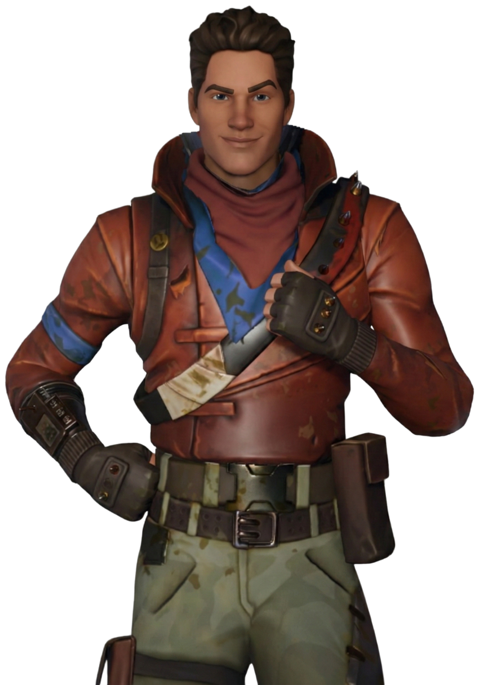
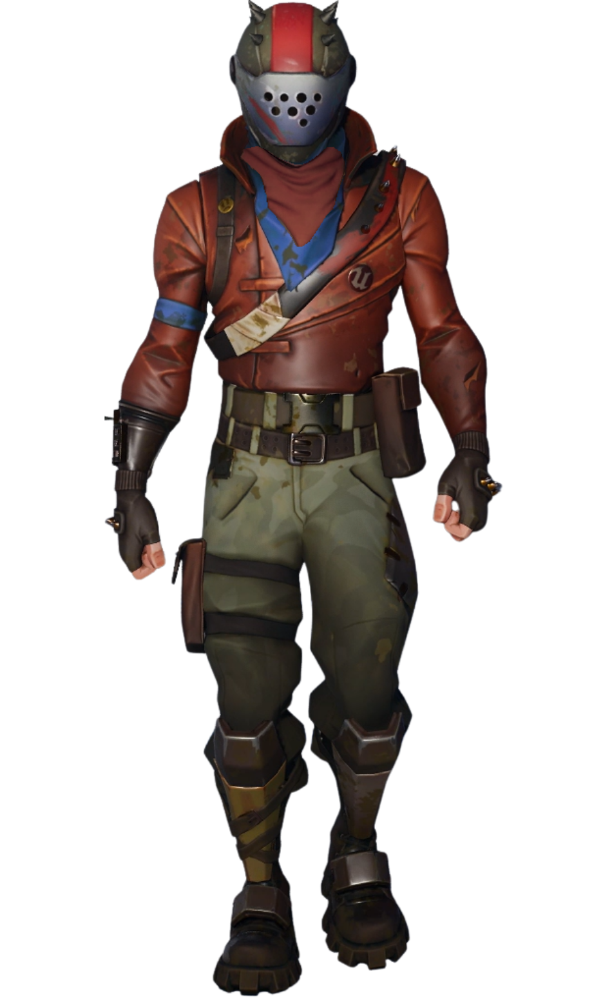
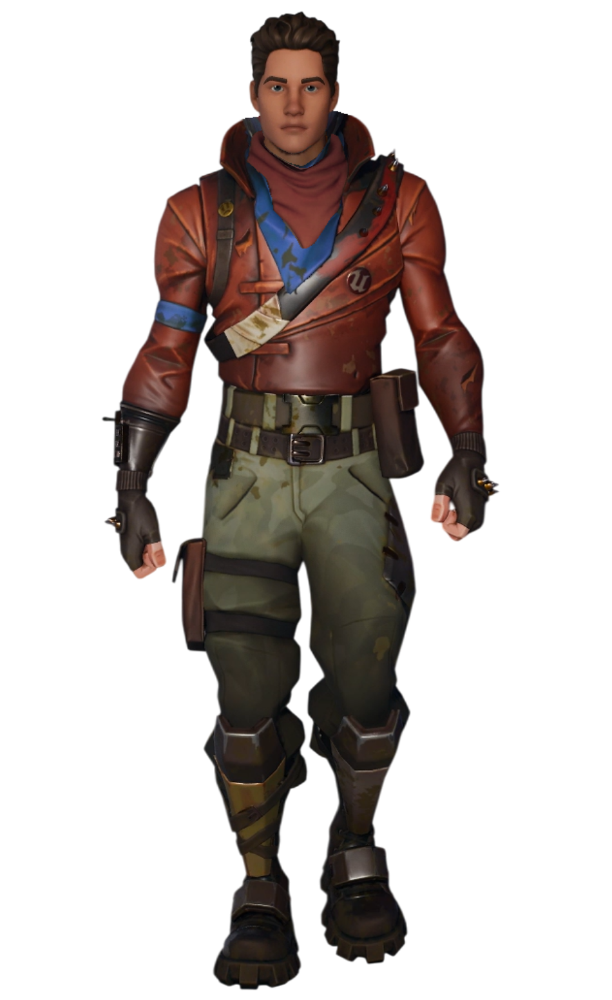

Barret
// Archives Biographiques
L'Étincelle d'Orion
Cadet de Scarlet de quatre ans, Barret a grandi dans l'ombre des carcasses métalliques de la décharge. Moins impétueux que sa sœur mais tout aussi ingénieux, il a hérité du sens du devoir et du calme de leur père. Toujours vêtu de sa veste couleur rouille, il est souvent la voix de la raison qui tempère les ardeurs du groupe.
La Découverte
C'est lui qui, au détour d'une fouille, a mis la main sur l'artefact qui allait tout changer : l'amulette boussole capable de localiser le Point Zéro. Cette découverte a propulsé le duo fraternel dans une guerre qui les dépassait, les forçant à s'allier avec le soldat Raptor , l'intrépide Harper et l'agile Lucie pour survivre aux ambitions des Monarques.
Le Pilier Fraternel
Survivant de l'effondrement d'Orion, Barret cache ses propres traumatismes pour rester le pilier émotionnel du Clan du Soleil. Derrière son masque métallique et son humour parfois maladroit, il veille inlassablement sur Scarlet, prêt à tout pour l'empêcher de sombrer sous le poids de la culpabilité.
// Variantes Visuelles

